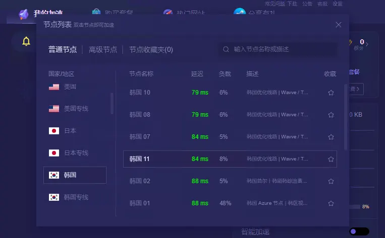

设备下载
优途加速器 Windows 下载与安装
Windows 客户端提供绿色版和安装版。大多数用户可以优先使用安装版；已经使用绿色版的用户，请在完整解压后再运行。
下载前：从确认过的主官网取得程序，保留安装包的原始文件名和版本信息。若 Windows 弹出发布者或安全警告，先核对文件来源和程序身份，不要为了安装而直接关闭全部系统防护。
绿色版和安装版怎么选
| 版本 | 使用方法 | 适合情况 |
|---|---|---|
| 绿色版 | 下载压缩包，解压到独立文件夹后从解压目录启动 | 希望使用便携方式，且系统环境已能正常加载所需组件 |
| 安装版 | 运行官网安装程序，按系统提示安装后打开 | 首次安装，或绿色版遇到网卡组件加载问题 |
从安装到首次连接
- 在官网选择 Windows 安装版或绿色版，并确认文件下载完整。
- 安装版按系统提示完成安装；绿色版先完全解压，不要在压缩包预览窗口中直接启动。
- 运行客户端。可选择“智连”或“自选”；自选模式允许按地区挑选具体线路。
- 按主按钮连接，然后打开常用网站测试。连接按钮显示状态不等于所有网站均已能访问。


网卡或驱动加载失败
如果安装程序要求管理员权限，先核对它确实来自优途官网，再按系统提示继续。Windows 的“网卡”错误不一定是物理网卡损坏，也可能是虚拟网络组件未安装成功。请保留完整报错内容，必要时截图反馈，避免凭错误名称下载第三方驱动包。
这类错误可能与系统权限、驱动安装或软件冲突有关。先退出客户端，从官网获取当前安装版重新安装，再测试。若仍失败，请记录完整报错，不要下载第三方提供的未知网卡驱动。
已连接却打不开网页
先断开确认原始网络，再更换节点。如果连普通网站也无法打开，检查 Windows 防火墙是否阻止了已确认身份的优途程序。具体步骤见Windows 防火墙与连接排查。无需为安装而关闭全部安全软件。